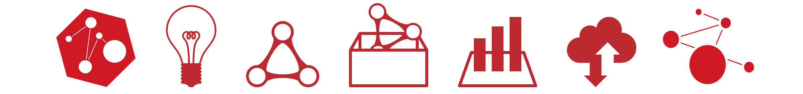

LODチャレンジ2022 開催趣旨
Linked Open Data チャレンジ Japan（LODチャレンジ）は、LOD(Linked Open Data)の技術普及の促進を目指したオープンデータのコンテストとして、2011年に初めて開催されました。LODは、誰もが自由に利用できるオープンデータ（Open Data）を、Webの技術を利用してつながったデータ（Linked Data）として公開することで、新たな価値を作り出すためのオープンデータ公開のベストプラクティスに位置づけられています。
LODチャレンジでは、この「つながり」を大切にした活動を続け、2020年には10周年を迎えることができました。
この間、多くの皆様のご支援のもと、データとデータの「つながり」のみならず、
応募いただいた作品と作品の「つながり」、
活動に関わり人と人の「つながり」、
......と、多くの「つながり」が生まれました。
これらの「つながり」を大切にし、これからも新たな「つながり」を生み出すことができる「場」を提供することを目的として、今年度もLODチャレンジ2022を開催いたします。
LODチャレンジ2022の応募部門は、昨年度に引き続き、「データ作成部門」と「データ活用部門」の２部門とします。
これにより、本チャレンジの最大の特徴である「データ」を中心とした様々な取り組みを応援し、データを中心としたコミュニティ形成を目指します。
これまでLODチャレンジを支えて頂いた応募者の皆様、スポンサー・パートナー・サポーターの皆様に心から感謝申しあげるとともに、 引きつづきのご支援を賜われますよう、よろしくお願い申しあげます。
LODチャレンジ2022 作品募集要項
１．エントリー部門
LODチャレンジ2022では以下の2つの部門で作品を募集します。
データ作成部門
つくったデータそのものを応募することができる部門です。新たに作成したデータだけでなく、すでに公開されたデータを加工したもの、 複数のデータ同士をつなぐためのデータなど、さまざまな種類のデータを募集します。対象のジャンルやテーマは問いません。 誰かの役に立つものや、自分が好きなものなど、自由な発想で作成してください。
データ活用部門
データをつかうためのアイディアやアプリケーションを応募することができる部門です。 データを分析した結果や、データ作成・公開を支援する仕組みなども歓迎します。
作品応募のヒント
LODチャレンジ2022では、各部門の応募作品や、国内外で公開されているデータセット・アプリケーションがつながり、新しい価値を創造するような作品を募集しております。以下のような作品の応募を推奨しています。・ 国内外のオープンデータを活用したアイディアを作品として応募する
・ これまでに応募されたデータを活用するアイディアを作品として応募する
・ これまでに応募されたデータをビジュアライズした作品を応募する
・ これまでに応募されたアイディアを実現するアプリケーションを開発して応募する
・ これまでに応募されたアプリケーションをより魅力的にするためのアイディアやデータセット、データ分析・可視化作品を応募する
・ これまでに応募された基盤技術を活用した作品を応募する
２．応募期間 及び 結果発表
応募期間 ： 2022年6月12日(日) ～ 2022年10月2日(日)
審査結果発表 ： 2022年12月(予定)
３．表彰予定賞
最優秀賞 ： 部門を横断して全応募作品の中で特に優れた作品
部門賞 ： 各部門で優れた作品
テーマ賞 ： 特定のテーマについて優れた作品
学生奨励賞 ： 大学・高専・高校・中学等の学生や生徒の方が応募された作品のうち、特に優れた作品
４．応募方法
「５．応募規定」にご同意の上、下記「作品応募フォーム」に必要事項を記入し、ご応募ください。（ご応募頂いた時点で応募規定に同意頂いたものとみなします）
フォームに記入する作品のURLは、ナレッジコネクター（ http://idea.linkdata.org/ ）で作成した作品紹介ページを推奨しますが、 独自に作成したWEBサイト、Github・Googleドライブ・Dropboxなどのサービスを用いて作品の情報を公開したURLなどでも構いません。 ご不明点等につきましては事務局までメール（ office@lodc.jp ）でお問い合わせください。
５．応募規定
規定1
LODチャレンジ2022に応募する全ての作品は「応募規定」に従うこととします。
応募にあたっては、応募者は、この応募規定の内容に同意されたものとします。
応募規定に違反したと審査委員会で判断した場合、対象の応募者の作品を審査対象外とします。
応募規定に違反またはその他審査委員会で必要と判断した場合、対象の応募者の作品を了解なしに応募一覧から削除することがあります。
規定2
LODチャレンジ2022は個人、団体を問わずどなたでも応募することができます。
ただし、16才以下の応募者は保護者の許可を得てから応募して下さい。
また、応募書式は日本語または英語で記述して下さい。
規定3
LODチャレンジ2022への応募は、LODチャレンジ2022開始前に発表された作品、開発された作品も対象となります。また、LODチャレンジ2022開催期間中において他で発表された作品も対象となります。
ただし、既に発表された作品をLODチャレンジ2022に応募した場合において発生した問題については応募者自身の責任となります。
規定4
LODチャレンジ2022への応募数は自由です。
また、複数の部門への応募も自由です。
ただし、同一の作品を複数の部門に応募することはできません。
同一の作品と実行委員会が判断した作品が複数の部門に応募されていた場合、応募者の了解なしに応募部門をひとつに決定する場合があります。
規定5
LODチャレンジ2022に応募する全ての作品は、LODチャレンジ2022応募期間中および2022年3月31日まではインターネットからアクセスあるいはダウンロードできるようにして下さい。
規定6
公開された作品を再利用して応募を行う場合には、再利用の対象となった応募作品のURLを必ず応募書式に記入して下さい。
規定7
再利用または追加元となった応募作品のURLが応募書式に記述されていない場合において、規定6に該当した作品であると応募者の了解なしに実行委員会が判断する場合があります。 また、URLが記入されている場合においても、記入されたURL以外に規定6に該当した作品であると、応募者の了解なしに実行委員会が判断する場合があります。
規定8
LODチャレンジ2022に応募された作品への追加、変更、修正は応募期間中および応募期間後において自由に行えます。
応募作品の審査は、応募締切日時点の作品で行います。
応募締切以降も作品への追加、変更、修正は自由に行えますが、締切以降に行われた追加、変更、修正の内容は審査対象外となります。
また、一度応募した作品の取り下げの際は、応募を取り下げる旨をLODチャレンジ実行委員会事務局にメールにてご連絡ください。
規定9
作品の応募の際には応募書式においてライセンスを必ず指定して下さい。指定がない場合は、権利を放棄したパブリックドメインの扱いとなります。
規定10
各部門で既に応募された作品を利用する場合は、応募書式に記載されているライセンスを遵守して下さい。
また、再利用対象の応募作品に対する著作権、商標などの知財財産に関する規定が本サイト以外の公開先で規定されている場合には、公開先の規定を遵守して下さい。
規定11
規定9、規定10における著作権の指定および著作権が指定された作品の再利用また本サイト以外で公開された応募作品の利用において発生したクレームや紛争等は、応募者自身で対応するものとし、実行委員会は一切の責任を負いません。
規定12
第三者が権利を有する著作物を使用（再利用を含む）する場合等は、あらかじめ応募者が許諾を得た上で応募して下さい。 第三者が権利を有する著作物を使用した場合において発生したクレームや紛争等は、応募者自身で対応するものとし、実行委員会は一切の責任を負いません。
規定13
応募者は、応募作品に含まれまたは応募作品が基づいている発明、着想、情報、著作物、商標、ノウハウ、アイディア等に関し、 LODチャレンジ2022に応募し、または規定9、規定10に基づいたライセンスを設定するために必要な知的財産権その他の正当な権利を有し、 または適切な権利処理を行っていること、および、他の応募者、実行委員会が応募作品をLODチャレンジ2022に関連して再利用する行為が応募者または第三者の権利を侵害しないことを保証するものとします。 応募者は、かかる保証に反して実行委員会に発生した損害の全てを補償するものとします。
規定14
応募者は実行委員会が今後応募作品を無償で利用（各種媒体への掲載、催事での展示）することに同意するものとします。
また、応募者は、応募作品が第三者に広く公表されることをあらかじめ承諾し、応募作品に含まれる情報の範囲や内容については各自の責任で判断するものとします。
応募された作品のLODチャレンジ2022における利用または公表によって応募者に発生するいかなる損害も、実行委員会は、一切負担しないことを応募者はあらかじめ承諾します。
規定15
応募者は、第三者への公開を望まない知的財産権、秘密情報等を応募作品に含めないものとし、応募作品に含める情報については自己の責任と判断においてあらかじめ必要な範囲で適切な権利保護の手続きを取るものとします。
規定16
応募者は、応募作品には秘密情報を含めないものとし、万一、応募作品に秘密情報が含まれていた場合にも、 応募者は、かかる秘密情報が公表される可能性があることをあらかじめ承諾し、実行委員会に対して、何らの損害を請求しないものとします。
規定17
本規定およびLODチャレンジ2022に起因しまたは関連する紛争は、日本法に準拠して解釈し、解決されるものとします。本規定の一部が無効と判断された場合にも、残りの規定は有効に存続するものとします。
実行委員会の判断において必要と認めた場合、本規定は修正されることがあるものとします。本規定に定めのない事項や疑義を生じた事項につきましては、実行委員会の行う決定に従って頂きますので、最新の情報を確認して下さい。
規定18
法律において認められる最大限の範囲で、LODチャレンジ2022に起因または関連する紛争または訴えが生じた場合に、応募者が実行委員会に対して、訴訟を提起し、差し止めによる救済を求め、
または司法もしくはその他の手続を申し立てるその他のいかなる権利もここに排除されるものとし、応募者はそれらの権利を全て明確に放棄するものとします。
なお、LODチャレンジ2022に起因または関連する一切の紛争については、東京地方裁判所を第一審の専属的合意管轄裁判所とします。
規定19
実行委員会はLODチャレンジ2022開催においていかなる損失、損害、発生費用などで責任を追うことはなく、応募者または応募者の技術的な問題などについて実行委員会は一切の責任を負いません。
規定20
実行委員会は、応募作品の窃盗、剽窃、破壊、不正アクセス、もしくは改ざん、または技術、ネットワーク、電話機、コンピュータ、ハードウェア、またはソフトウェアの異常もしくは制約について責任を負いません。
また、実行委員会は、電子的な伝送エラーによる操作または伝送の遺漏、中断、削除、欠陥、遅延に対して責任を負いません。
LODチャレンジ2022に応募するため、または応募期間中に生じた経済的な損害その他のいかなる損失に対しても実行委員会は責任を負わないものとします。
規定21
実行委員会は、応募者が応募作品に含まれる知的財産権、秘密情報等に関してLODチャレンジ2022への応募に起因または関連して何らかの損害を被った場合も、当該損害につき、一切の責任を負わないものとします。
応募者は、応募作品に起因または関連して、第三者から要求、クレーム等を受け、または第三者に対して要求、クレーム等が発生した場合には、自己の責任と費用で、
これらの要求、クレームおよびこれらに起因する紛争を処理解決するものとし、実行委員会に一切迷惑または損害を与えないものとします。
実行委員会はかかるトラブルについて、一切の責任を負いません。万一、実行委員会がこれにより損害を被った場合には、応募者は、自己の行為により実行委員会に生じた一切の損害、損失および費用を賠償するものとします。
６．審査基準
データ作成部門 審査基準
Impact - 影響力
人々の意識や行動を変えるようなインパクトを与える作品か
Creativity - 創造力
世の中に新たな価値を創りだす作品か
Usefulness - 有用性
利用しやすく、役に立つ作品であるか
Accessibility - 機械可読性
機械から読み取りやすい形で公開されているか
Openness - 開放性
他者が二次利用可能なライセンスで公開しているか
Linkability - つながる可能性
複数のデータソースを組み合わせて利用することが提案されているか、そしてアイディアが他の作品等（※）で利用・実現されているか
※応募者が直接作成・運用に関与していないデータ・アプリケーション・組織等
Sustainability - 持続可能性
継続的に公開・更新し続けるための工夫や計画が示されているか
データ活用部門 審査基準
Impact - 影響力
人々の意識や行動を変えるようなインパクトを与える作品か
Creativity - 創造力
世の中に新たな価値を創りだす作品か
Usefulness - 有用性
利用しやすく、役に立つ作品であるか
Use of open data - オープンデータ活用性
オープンデータが効果的に使われているか
Linkability - つながる可能性
複数のデータソースを組み合わせて利用することが提案されているか、そしてアイディアが他の作品等（※）で利用・実現されているか
※応募者が直接作成・運用に関与していないデータ・アプリケーション・組織等
Sustainability - 持続可能性
継続的に公開・更新し続けるための工夫や計画が示されているか
Operativity - 操作性
操作が直感的でわかりやすいか
Completeness - 完成度
公開・配布できるレベルに近いものに仕上がっているか
Openness - 開放性
作品の成果物（ソースコード等）を他者が二次利用可能なライセンスで公開しているか
Designability - デザイン性
対象のより深い理解や新たな知識の発見を促すようなデザイン（データ分析や可視化）がなされているか
Feasibility - 実現可能性
アイディアを実現するための工夫や計画が示されているか